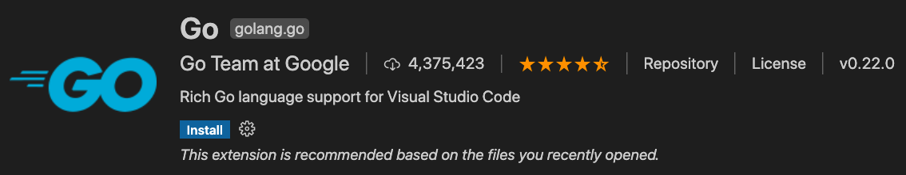
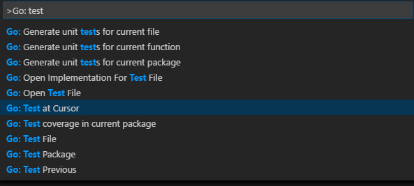

Go in Visual Studio Code
Using the Go extension for Visual Studio Code, you get features like IntelliSense, code navigation, symbol search, testing, debugging, and many more that will help you in Go development.

You can install the Go extension from the VS Code Marketplace.
Watch "Getting started with VS Code Go" for an explanation of how to build your first Go application using VS Code Go.
This article describes only a subset of the features the Go extension provides. See the extension's documentation for the full, up-to-date list of supported features.
IntelliSense

IntelliSense features are provided by the Go language server, gopls, maintained by the Go team. You can configure the behavior of gopls using the gopls settings.
Auto completions
As you type in a Go file, you can see IntelliSense providing you with suggested completions. This even works for members in current, imported, and not yet imported packages. Just type any package name followed by ., and you will get suggestions for the corresponding package members.
Tip: Use
kb(editor.action.triggerSuggest)to trigger the suggestions manually.
Hover Information
Hovering on any variable, function, or struct will give you information on that item such as documentation, signature, etc.
Signature help
When you open the ( while calling a function, a pop-up provides signature help for the function. As you keep typing the parameters, the hint (underline) moves to the next parameter.
Tip: Use
kb(editor.action.triggerParameterHints)to manually trigger the signature help when the cursor is inside the()in the function call.
Code navigation
Code navigation features are available in the context menu in the editor.
- Go To Definition
kb(editor.action.revealDefinition)- Go to the source code of the type definition. - Peek Definition
kb(editor.action.peekDefinition)- Bring up a Peek window with the type definition. - Go to References
kb(editor.action.goToReferences)- Show all references for the type. - Show Call Hierarchy
kb(editor.showCallHierarchy)- Show all calls from or to a function.
You can navigate via symbol search using the Go to Symbol commands from the Command Palette (kb(workbench.action.showCommands)).
- Go to Symbol in File -
kb(workbench.action.gotoSymbol) - Go to Symbol in Workspace -
kb(workbench.action.showAllSymbols)
You can also navigate back and forth between a Go file and its test implementation using the Go: Toggle Test File command.
Build, test, and diagnose
The Go language server (gopls) detects build and vet errors found on the workspace. The errors and warnings from running any/all of the above will be shown red/green squiggly lines in the editor. These diagnostics also show up in the Problems panel (View > Problems).
You can add additional lint checks using the go.lintOnSave setting and configuring your choice of linting tool (staticcheck, golangci-lint, or revive) using the go.lintTool setting.
You can configure the extension to run tests and compute test coverage using:
go.testOnSavego.coverOnSavego.testFlags
Formatting
You can format your Go file using kb(editor.action.formatDocument) or by running the Format Document command from the Command Palette or the context menu in the editor.
By default, formatting is run when you save your Go file. You can disable this behavior by setting editor.formatOnSave to false for the [go] language identifier. You can change this using your JSON setting files.
"[go]": {
"editor.formatOnSave": false
}
When you have multiple formatters activated for Go files, you can select the Go extension as the default formatter.
"[go]": {
"editor.defaultFormatter": "golang.go"
}
Formatting is provided by gopls. If you want gofumpt-style formatting, you can configure gopls to use gofumpt.
"gopls": {
"formatting.gofumpt": true
}
Test
There are many test-related commands that you can explore by typing Go: test in the Command Palette.

The first three above can be used to generate test skeletons for the functions in the current package, file, or at the cursor using gotests. The last few can be used to run tests in the current package, file, or at the cursor using go test. There is also a command for getting test coverage.
Import packages
Run the command Go: Add Import to get a list of packages that can be imported to your Go file. Choose one and it will get added in the import block of your Go file.
Rename symbols
You can rename symbols using kb(editor.action.rename) or by running the Rename Symbol command in the context menu in the editor.
Debugging
The Go extension lets you debug Go code as well. You will need to install the Delve debugger manually as a prerequisite. Read Debug Go programs in VS Code for setup steps, information on remote debugging and a troubleshooting guide.
Next steps
This has been a brief overview showing the Go extension features within VS Code. For more information, see the details provided in the Go extension README.
To stay up to date on the latest features/bug fixes for the Go extension, see the CHANGELOG.
If you have any issues or feature requests, feel free to log them in the Go extension vscode-go repo.
If you'd like to learn more about VS Code, try these topics:
- Basic Editing - A quick introduction to the basics of the VS Code editor.
- Install an Extension - Learn about other extensions are available in the Marketplace.
- Code Navigation - Move quickly through your source code.